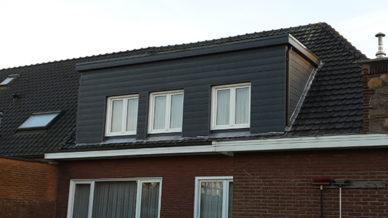

<!DOCTYPE html>
<html>
<head lang="en">
    <meta charset="UTF-8">
    <meta name="viewport" content="width=device-width, initial-scale=1">
    <meta name="description" content="">
    <link rel="stylesheet" href="vendor/bootstrap/dist/css/bootstrap.min.css">
    <link rel="stylesheet" href="vendor/font-awesome/css/font-awesome.min.css">
    <link rel="stylesheet" href="vendor/animate.css/animate.css">
    <link rel="stylesheet" href="css/style.css">
    <script src="vendor/jquery/dist/jquery.js"></script>
    <script src="vendor/bootstrap/dist/js/bootstrap.js"></script>
    <script src="vendor/jquery.stellar/jquery.stellar.js"></script>
    <script src="vendor/wow/dist/wow.js"></script>
    <script>new WOW().init(); </script>

    <title>Dakwerken Daniels</title>
</head>
<body>
<div class="container">
    <header>
        
    </header>
</div>

<section class="container section-troeven">
    <h2>ONZE TROEVEN</h2>
    <p>Meewerkende patron - 15 jaar ervaring - Kwalitatief en duurzaam - Correcte prijs</p>
</section>

<div class="aboutus-banner"></div>
<section class="container section-aboutus wow fadeIn" data-wow-duration="3s">
    <div class="row">
        <div class="col-md-5 aboutus__img">
            
        </div>
        <div class="col-md-7">
            <h1>Dakwerken Daniels</h1>

            <p>Wij zijn gevestigd te Dessel in de provincie Antwerpen. De zaakvoerder van Dakwerken Daniels staat elke
                dag zelf op de werkvloer. Zo heeft u altijd persoonlijk contact. Reeds 15 jaar ervaring als dakwerker.
                Voor
                alle werken aan uw dak is Dakwerken Daniels de dakspecialist.
                Wij houden steeds rekening met de wensen van de klant en ook geven wij altijd deskundig advies.
            </p>
        </div>
        <div class="col-md-12">
            <p>U kan ons steeds vrijblijvend contacteren via het contactformulier, email of gsm voor een gratis en
                vrijblijvende prijsofferte. Aarzel dus niet en contacteer ons. Wij werken uitsluitend met de betere en
                meest duurzame materialen en bieden u de beste service aan.
            </p>
        </div>
    </div>
</section>

<section class="container section-business wow fadeIn" data-wow-duration="3s">
    <div class="row">
        <div class="col-md-4 business__color-darker">

                <h2>HELLENDE DAKEN</h2>
                <p>Wij doen de daktimmer van uw dak. Als ook dakkapellen en plaatsing van Veluxen. Wij werken met alle
                    soorten pannen, ook met natuurleien en kunststofleien. Ecopanelen en sandwichpanelen van het merk
                    Joriside. Voor een dakrenovatie en herstellingen kan u ook steeds beroep op ons doen.
                    Bij Dakwerken Daniels vindt u ongetwijfeld de pan of lei die past bij de stijl van uw woning.</p>

        </div>
        <div class="col-md-4 business__color-main">
            <h2>PLATTE DAKEN</h2>

            <p>Voor roofing werken wij met de betere materialen zoals : Soprema, Deboer, Derbigum enz.
                Tevens doen wij ook het isoleren van uw plat dak. Plaatsing van lichtkoepels of ventilatie in uw
                plat dak is ook geen enkel probleem.
            </p>
        </div>
        <div class="col-md-4 business__color-light">
            <h2>LOOD, ZINK-en KOPERWERKEN</h2>

            <p>Is uw dakgoot aan vernieuwing toe of heeft u een lek dan bent u bij Dakwerken Daniels op de juiste plek .
                Wij bieden een groot gamma aan hanggoten aan.
                Tevens vernieuwen wij ook de zink in de bakgoten, alsook het bekleden van de dakgoten met pvc,
                rockpanel, ceder, enz.
            </p>
        </div>
    </div>
</section>

<section class="container section-business wow fadeIn" data-wow-duration="3s">
    <div class="row">
        <div class="col-md-4 business__color-light">
            <h2>DAKISOLATIE</h2>

            <p>Voor het isoleren van uw zolder of van hellende en platte daken zijn er specifieke materialen
                verkrijgbaar zoals Sarkingdak, Isover, Recticel, Bauder, enz. Want een goed geisoleerd dak houdt uw
                woning lekker warm in de winter en koel in de zomer. Tevens bespaart u ook op verwarmingskosten. En
                heb je recht op supplementaire fiscale subsidies van de overheid .</p>
        </div>
        <div class="col-md-4 business__color-main">
            <h2>GEVELBEKLEDING</h2>

            <p>Voor het bekleden van gevels bestaan er verschillende mogelijkheden o.a. leien, sidings, cedral click
                systeem, geïsoleerde wandpanelen, cederhout.</p>
        </div>
        <div class="col-md-4 business__color-darker">
            <h2>CARPORTS EN PERGOLA'S</h2>

            <p>Dakwerken Daniels bezorgt eveneens de plaatsing van carports en pergola's.</p>
        </div>
    </div>
</section>

<div class="contact-banner"></div>
<section class="container section-contact wow fadeIn" data-wow-duration="3s">
    <h2>Ons contacteren - Vraag een gratis prijsofferte aan</h2>

    <div class="row">
        <div class="col-md-7">
            <form action="verzonden.html">
                <input type="text" required="required" name="naam" placeholder="Jouw naam">
                <input type="email" required="required" name="email" placeholder="Jouw e-mail">
                <textarea required="required" placeholder="Bericht"></textarea>
                <input type="submit" name="send" action="mailto:stefanvandenborne@gmail.com" value="Verzenden">
            </form>
        </div>
        <div class="col-md-5 contact-info">
            <p>
                Dakwerken Daniels BVBA<br>
                Meistraat 90<br>
                2480 Dessel<br>
            </p>

            <p>
                Gsm 0473/548704 <br>
                <a href="mailto:swen.daniels@skynet.be">swen.daniels@skynet.be</a>

            </p>
        </div>
    </div>
</section>

<div class="foto-banner"></div>
<section class="container section-foto wow fadeIn" data-wow-duration="3s">
    <ul>
        <li></li>
        <li></li>
        <li></li>
    </ul>
</section>
<footer class="section-footer">
    <div class="container">
        <p>&copy; Dakwerken Daniels | 2016</p>
    </div>
</footer>

</body>
</html>
